Checklist dos critérios
Cada requisito da entrega, a evidência que o atende e o teste automatizado que o comprova.
| Critério | Evidência | Status |
|---|---|---|
| MVP funcional executando o fluxo principal | Presença → avaliação DBR → observação → revisão humana → intervenção → trajetória → encaminhamento à psicóloga, nos 3 perfis. ver → | Atendido |
| Modelo de dados implementado | 9 coleções com chaves e regras de integridade (ERD e dicionário documentados). ver → | Atendido |
| Populado com dados sintéticos representativos | 18 educandos em 4 turmas, 15 avaliações, 9 registros, 3 intervenções, 4 encaminhamentos e 1 caso, cobrindo todos os estados. ver → | Atendido |
| Fase de testes validando o fluxo principal | 16 testes E2E automatizados (Playwright): 16/16 aprovados. ver → | Atendido |
| Operação estável | Zero erros de JavaScript em todos os testes, persistência após recarregar, restauração de dados, sem rolagem lateral em 375 px e 1280 px, 8 defeitos corrigidos. ver → | Atendido |
| Entrega via repositório | Código, testes, scripts e documentos versionados no GitHub e publicados no GitHub Pages. ver → | Atendido |
| Handover · vídeo demonstrativo | Vídeo de 85 s legendado, gravado automaticamente a partir do app real. ver → | Atendido |
| Handover · registro do modelo de dados | docs/modelo-de-dados.md: ERD, dicionário, regras calculadas. ver → | Atendido |
| Handover · instalação e acesso | README.md: link, perfis e códigos, como rodar, testar, publicar e manter. ver → | Atendido |
| Handover · evidências dos testes | Esta página + relatório Playwright + JSON + capturas de tela. ver → | Atendido |
| Handover · principais decisões técnicas | docs/decisoes-tecnicas.md: 8 decisões e 8 correções. ver → | Atendido |
Vídeo demonstrativo
Fluxo principal nos três perfis, em 85 segundos, com legendas. Gravado automaticamente a partir do app real (npm run video).
Roteiro
- A Equipe entra sem senha e vê o painel da coleta.
- Presença em lote, com falta justificada, e fechamento.
- Avaliação bloqueada sem consentimento; avaliação rápida com sinalização para a psicóloga.
- Observação com alerta ao citar outra criança, enviada para revisão.
- A Coordenação entra com código e valida o registro.
- Intervenção: proposta, acompanhamento e validação.
- Trajetória individual em linha do tempo.
- Governança: consentimento e trilha de auditoria.
- A Psicóloga revisa o encaminhamento.
Fluxo principal, passo a passo
Capturas de tela geradas automaticamente durante os testes. O código ao lado de cada legenda é o teste que produziu a imagem. Clique numa imagem para ampliar.
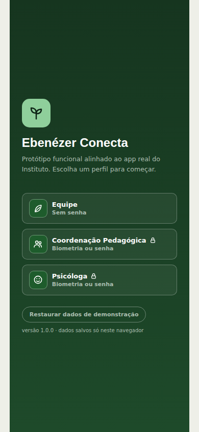
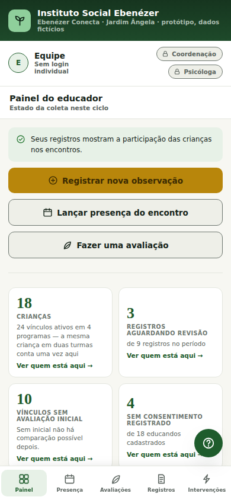
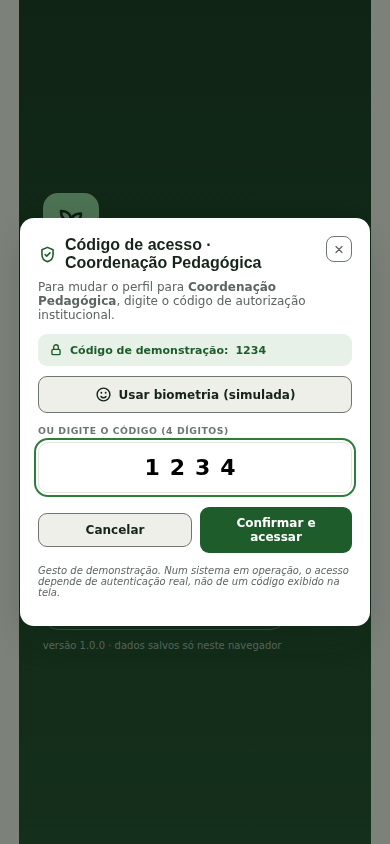
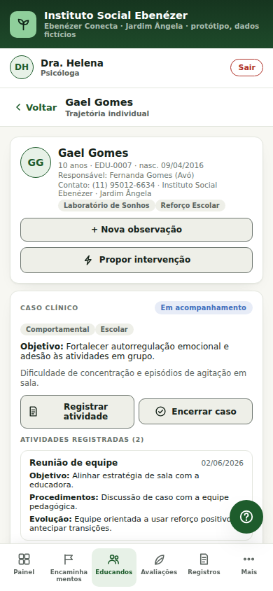
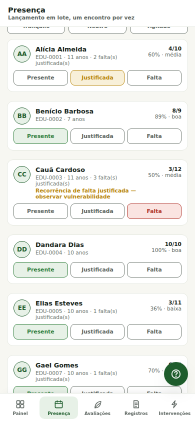
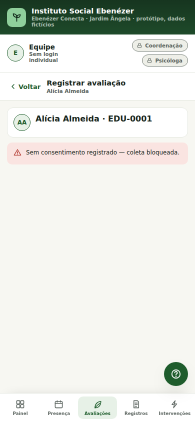
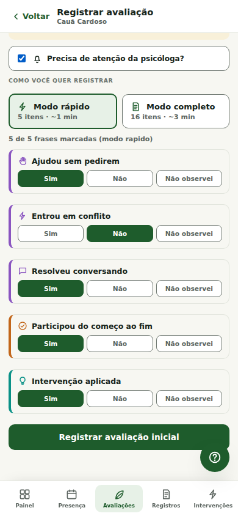
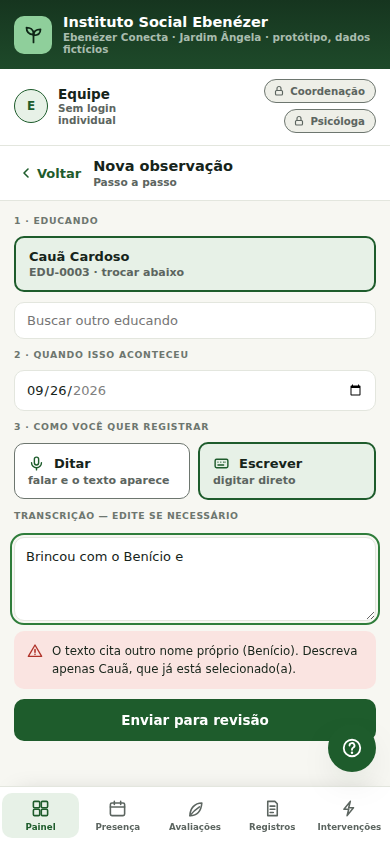
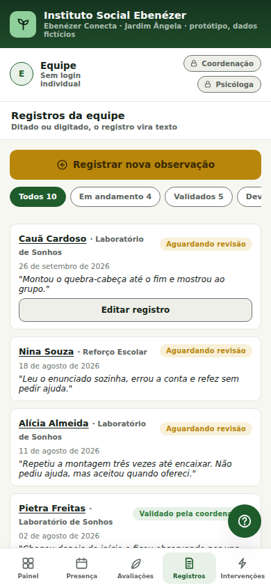
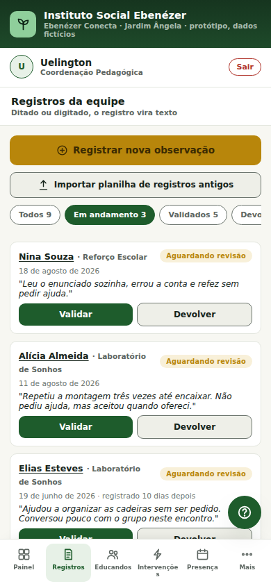
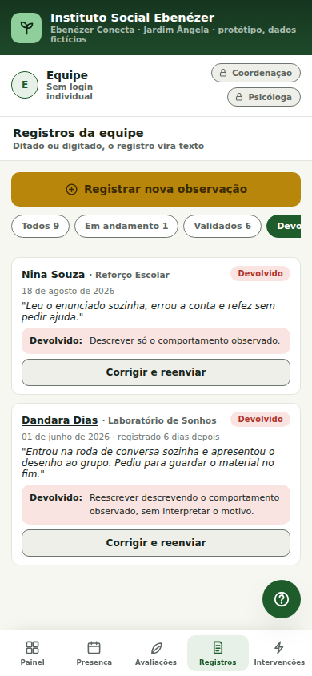
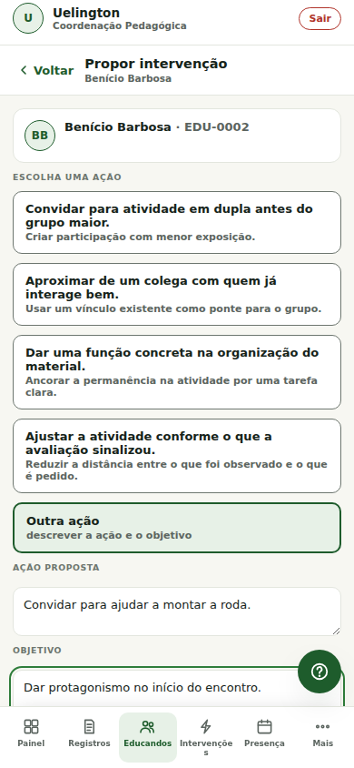
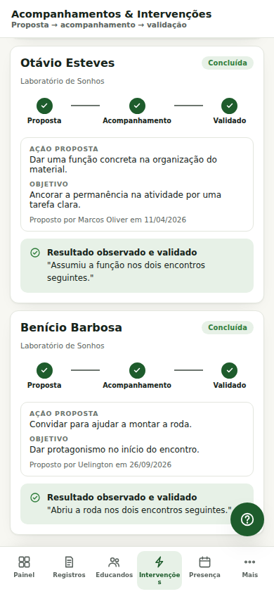
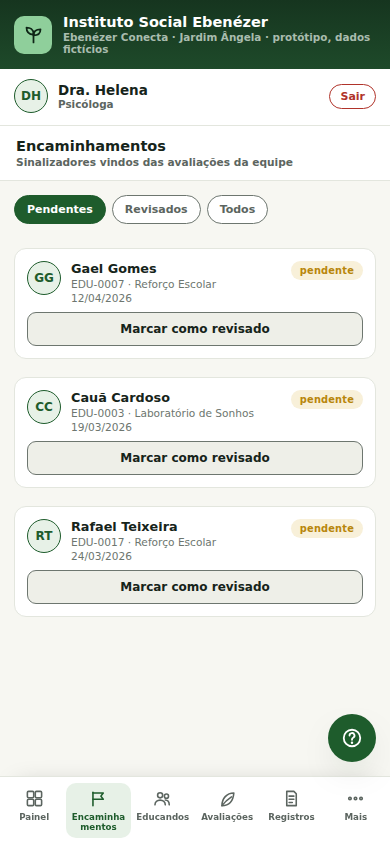
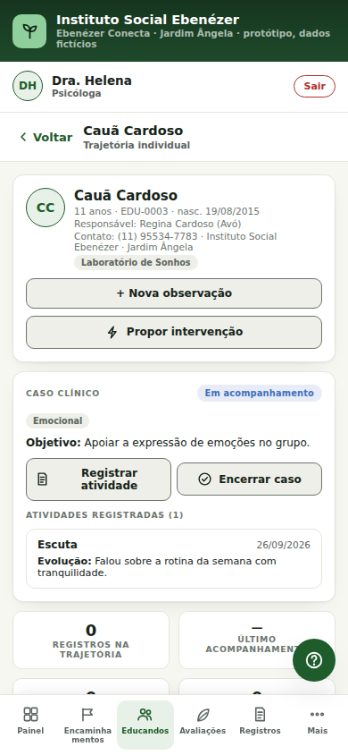
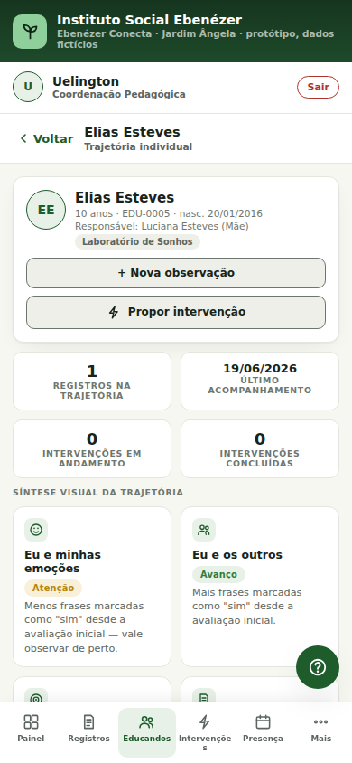
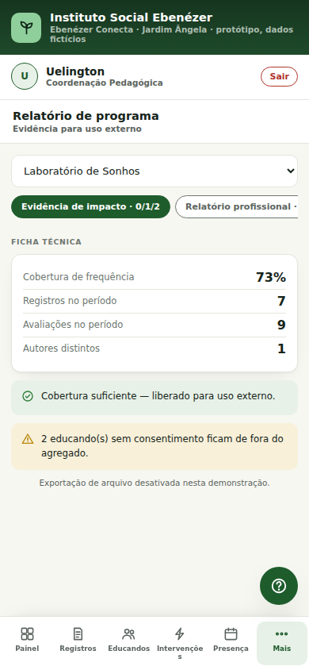
Evidências dos testes
16 testes ponta a ponta com Playwright + Chromium em tela de celular (390×844). Cada teste começa com o navegador limpo e reprova se ocorrer qualquer erro de JavaScript. Execução completa: 53 s. Resultado: 16 aprovados, 0 falhas.
| ID | O que valida | Resultado |
|---|---|---|
| T01 | Tela inicial mostra os três perfis e a Equipe entra sem senha | Aprovado |
| T02 | Código errado é recusado; código certo libera a Coordenação | Aprovado |
| T03 | Segregação: só a psicóloga vê encaminhamentos, caso clínico e contato do responsável | Aprovado |
| T04 | Presença: marcar todos, fechar lançamento; só a coordenação reabre | Aprovado |
| T05 | Avaliação bloqueada sem consentimento; liberada após a coordenação registrar | Aprovado |
| T06 | Avaliação inicial (modo rápido) + sinalização para a psicóloga; depois vira check-in | Aprovado |
| T07 | Registro de observação: alerta de outro nome, envio para revisão | Aprovado |
| T08 | Revisão humana: coordenação valida um registro e outro é devolvido e corrigido | Aprovado |
| T09 | Intervenção percorre proposta → acompanhamento → validação | Aprovado |
| T10 | Psicóloga revisa encaminhamento, abre caso e registra atividade | Aprovado |
| T11 | Trajetória individual consolida avaliações, registros e intervenções | Aprovado |
| T12 | Relatório de programa mostra ficha técnica e exclusão de quem não tem consentimento | Aprovado |
| T13 | Modelo de dados e massa sintética estão íntegros | Aprovado |
| T14 | Frequência considera falta justificada e sinaliza recorrência | Aprovado |
| T15 | Dados persistem após recarregar e podem ser restaurados | Aprovado |
| T16 | Todas as telas de todos os perfis abrem sem erro e sem rolagem lateral | Aprovado |
Arquivos brutos no repositório: docs/testes/resultado-testes.json · docs/testes/relatorio-html/ · código em tests/fluxo-principal.spec.js. Para repetir: npm install && npm test.
Estabilidade e defeitos corrigidos
A fase de testes encontrou 8 defeitos, todos corrigidos. Os testes de regressão impedem que eles voltem.
| # | Problema encontrado | Correção |
|---|---|---|
| B1 | O 1º toque em "Enviar" era perdido depois de digitar (observação, código, intervenção, caso). | Estado atualizado a cada tecla, sem redesenhar a tela. |
| B2 | O registro devolvido e corrigido não voltava para a fila. | Volta a "aguardando" e entra na auditoria. |
| B3 | A data "de hoje" era fixa, o que mostrava "registrado 17 dias depois". | Usa a data do aparelho. |
| B4 | A turma Primeira Infância estava vazia. | A massa sintética passou a 18 educandos em 4 turmas. |
| B5 | 9 abas na barra da coordenação, com rótulos quebrados. | 5 abas + menu "Mais". |
| B6 | Uma falha do armazenamento derrubava o app. | try/catch, validação e botão "Restaurar dados". |
| B7 | O cabeçalho da trajetória saía sem estilo. | Estilo aplicado aos cartões. |
| B8 | Uma tela nova abria na rolagem da tela anterior (ex.: a trajetória já rolada até o meio). | Volta ao topo a cada troca de tela. |
Modelo de dados
Um objeto DB com 9 coleções, salvo em JSON no navegador. O educando é a entidade central: toda coleção aponta para ele por childId, e o teste T13 verifica essa integridade. ERD completo em docs/modelo-de-dados.md.
Educando
- id · EDU-xxxx (PK)
- nome, idade, nasc
- resp{nome, rel, contato}
- turmas[] (FK)
- consentimento
- freq{p, j, t}
Turma
- id · lab/re/pi/vt (PK)
- nome
- presencaOnly
Avaliação (DBR)
- childId, turmaId (FK)
- tipo · inicial | checkin
- modo · rápido 5 | completo 16
- respostas{frase: sim|não|não observei}
- atencaoPsicologa
Registro
- childId, turmaId (FK)
- texto, método
- status · aguardando | validado | devolvido
- motivo, criadoEm
Intervenção
- childId (FK)
- ação, objetivo
- estágio 1 → 2 → 3
- resultado
Encaminhamento
- childId (FK)
- data
- status · pendente | revisado
- sem motivo escrito
Caso clínico
- childId (FK)
- tipos[], objetivo
- status · ativo | encerrado
- atividades[] (estrutura CRP)
Presença
- chave turmaId_data (PK)
- marks{childId: presente|justificada|falta}
- clima, fechado
Auditoria
- ts
- texto (quem fez o quê)
Dados sintéticos representativos
Nomes, datas e telefones 100% fictícios, cobrindo as 4 turmas e todos os estados de cada fluxo, para que qualquer tela possa ser demonstrada.
| Entidade | Qtd. | O que a massa cobre |
|---|---|---|
| Educandos | 18 | 4 turmas (Laboratório de Sonhos 11, Reforço Escolar 6, Primeira Infância 4, Vivência Terapêutica 3 vínculos); 4 sem consentimento; 4 a 11 anos; casos de falta justificada recorrente |
| Avaliações | 15 | iniciais e check-ins; modos rápido e completo; 1 com sinalização para a psicóloga |
| Registros | 9 | aguardando, validado e devolvido; ditado e escrito |
| Intervenções | 3 | em acompanhamento e concluída com resultado |
| Encaminhamentos | 4 | pendentes e revisado |
| Casos clínicos | 1 | ativo, com 2 atividades no formato CRP |
| Frases DBR | 16 | 5 dimensões (CASEL + BNCC), 5 no modo rápido, versionadas |
Principais decisões técnicas
Resumo. A versão completa, com as consequências de cada decisão, está em docs/decisoes-tecnicas.md.
Instalação e acesso
Não precisa instalar nada: basta abrir o app (https://gabi-guerreiro.github.io/ebenezer-conecta/) no celular ou no computador. Para rodar localmente ou alterar o código, siga o README.md.
git clone https://github.com/gabi-guerreiro/ebenezer-conecta.git cd ebenezer-conecta npm start # app em http://localhost:4173 npm install && npm test # 16 testes E2E